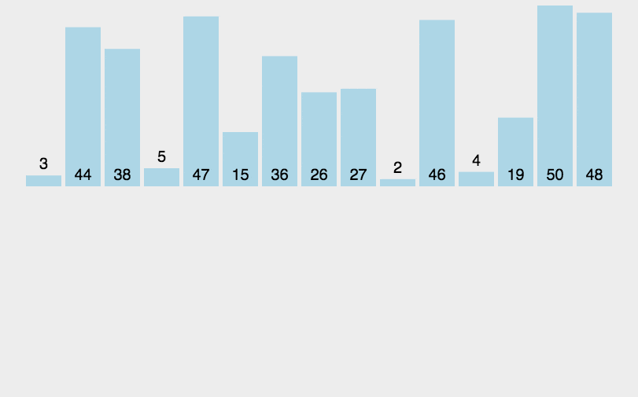
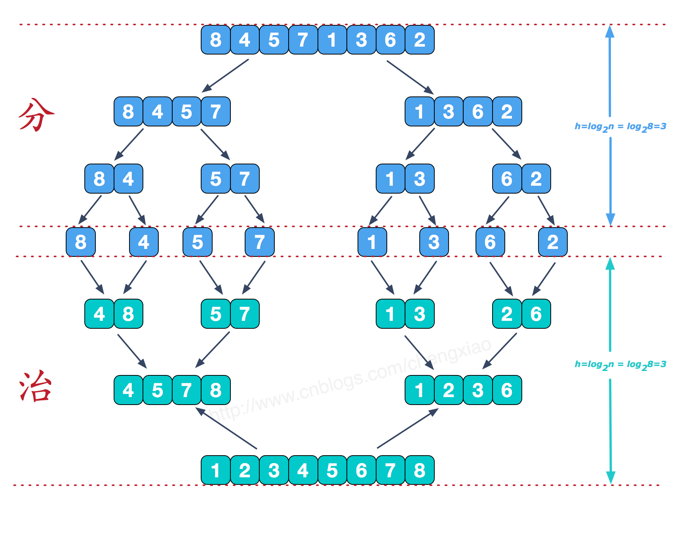
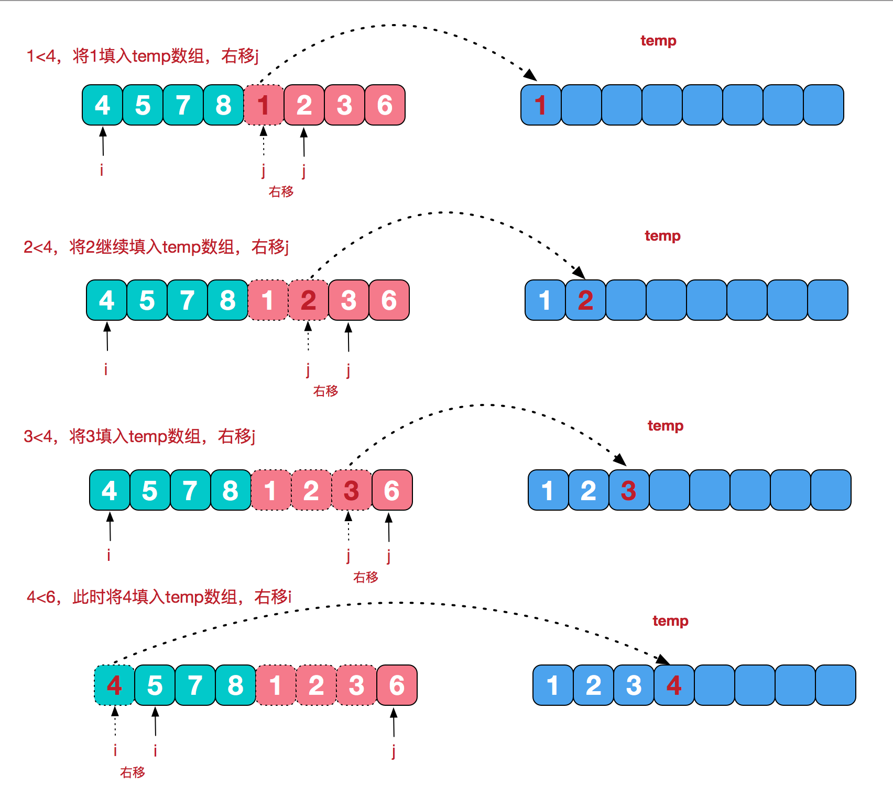
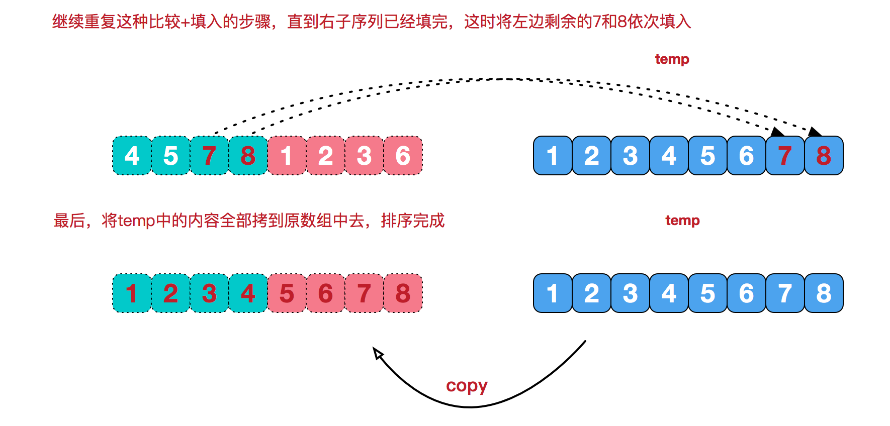

El ordenamiento por fusión (Merge sort) es un algoritmo de ordenamiento eficiente basado en la operación de fusión. Este algoritmo es una aplicación muy típica del método de divide y vencerás (Divide and Conquer).
Como una aplicación típica del pensamiento de divide y vencerás, el ordenamiento por fusión tiene dos métodos de implementación:
- Recursión de arriba hacia abajo (todos los métodos recursivos se pueden reescribir con iteración, por lo que existe el segundo método);
- Iteración de abajo hacia arriba;
En 'Estructuras de datos y algoritmos con JavaScript', el autor ofrece el método iterativo de abajo hacia arriba. Sin embargo, sobre el método recursivo, el autor considera:
However, it is not possible to do so in JavaScript, as the recursion goes too deep for the language to handle.
Sin embargo, en JavaScript esta forma no es muy viable, porque la profundidad de recursión de este algoritmo es demasiado profunda para JavaScript.
Para ser honesto, no entiendo bien esta frase. ¿Quiere decir que la memoria del compilador de JavaScript es demasiado pequeña y que una recursión demasiado profunda puede causar un desbordamiento de memoria? Espero que algún experto pueda orientarme.
Al igual que el ordenamiento por selección, el rendimiento del ordenamiento por fusión no se ve afectado por los datos de entrada, pero su rendimiento es mucho mejor que el del ordenamiento por selección, porque siempre tiene una complejidad temporal de O(n log n). El costo es que requiere espacio de memoria adicional.
La idea central del ordenamiento por fusión es dividir un problema grande en varios problemas pequeños, resolverlos por separado y luego combinar los resultados para obtener finalmente la solución del problema completo. En cuanto al problema de ordenamiento, los pasos del ordenamiento por fusión son los siguientes:
- Dividir (Divide): Divide el arreglo a ordenar en dos subarreglos, cada uno contiene aproximadamente la mitad de los elementos.
- Resolver (Conquer): Ordena recursivamente cada subarreglo.
- Combinar (Combine): Fusiona los dos subarreglos ordenados en un arreglo ordenado.
Mediante la división y la fusión continuas, finalmente todo el arreglo quedará ordenado.
2. Pasos del algoritmo
-
Asignar un espacio, cuyo tamaño sea la suma de las dos secuencias ya ordenadas; este espacio se utiliza para almacenar la secuencia fusionada;
-
Establecer dos punteros, cuyas posiciones iniciales son respectivamente las posiciones iniciales de las dos secuencias ya ordenadas;
-
Comparar los elementos apuntados por los dos punteros, seleccionar el elemento relativamente menor, colocarlo en el espacio de fusión y mover el puntero a la siguiente posición;
-
Repetir el paso 3 hasta que un puntero llegue al final de la secuencia;
-
Copiar directamente todos los elementos restantes de la otra secuencia al final de la secuencia fusionada.
3. Demostración animada

Supongamos que hay una lista por ordenar [38, 27, 43, 3, 9, 82, 10]; el proceso del ordenamiento por fusión es el siguiente:
División：
Dividir la lista en dos mitades:
[38, 27, 43, 3]和[9, 82, 10]。Continuar dividiendo:
[38, 27, 43, 3]Dividir en[38, 27]和[43, 3]。[9, 82, 10]Dividir en[9]和[82, 10]。
Continuar dividiendo:
[38, 27]Dividir en[38]和[27]。[43, 3]Dividir en[43]和[3]。[82, 10]Dividir en[82]和[10]。
Finalmente se divide en sublistas de un solo elemento.
Fusionar：
Fusionar
[38]和[27]Se obtiene[27, 38]。Fusionar
[43]和[3]Se obtiene[3, 43]。Fusionar
[27, 38]和[3, 43]Se obtiene[3, 27, 38, 43]。Fusionar
[9]和[10, 82]Se obtiene[9, 10, 82]。Fusionar
[3, 27, 38, 43]和[9, 10, 82]Se obtiene la lista ordenada final[3, 9, 10, 27, 38, 43, 82]。
Ejemplo
if len(arr) <= 1:
return arr
# Dividir: dividir la lista en dos mitades
mid = len(arr) // 2
left_half = merge_sort(arr[:mid]) # Ordenar recursivamente la mitad izquierda
right_half = merge_sort(arr[mid:]) # Ordenar recursivamente la mitad derecha
# Fusionar: unir las dos sublistas ordenadas
return merge(left_half, right_half)
def merge(left, right):
sorted_arr = []
i = j = 0
# Comparar los elementos de las dos sublistas y fusionarlas en orden
while i < len(left) and j < len(right):
if left[i] < right[j]:
sorted_arr.append(left[i])
i += 1
else:
sorted_arr.append(right[j])
j += 1
# Agregar los elementos restantes al resultado
sorted_arr.extend(left[i:])
sorted_arr.extend(right[j:])
return sorted_arr
# Ejemplo
arr = [38, 27, 43, 3, 9, 82, 10]
sorted_arr = merge_sort(arr)
print(sorted_arr) # Salida: [3, 9, 10, 27, 38, 43, 82]
Complejidad temporal
División: Cada vez que la lista se divide en dos mitades, se necesitan O(log n) niveles de recursión.
Fusión: Cada nivel de recursión necesita O(n) tiempo para fusionar las sublistas.
Complejidad temporal total：O(n log n)。
Complejidad espacial
O(n); el ordenamiento por fusión necesita espacio adicional para almacenar listas temporales.
Ventajas y desventajas
Ventajas：
La complejidad temporal es estable en O(n log n), adecuado para datos a gran escala.
Algoritmo de ordenamiento estable (el orden relativo de los elementos iguales no cambia).
Adecuado para ordenamiento externo (como ordenar archivos en disco).
Desventajas：
Requiere espacio de almacenamiento adicional, con complejidad espacial O(n).
Para datos a pequeña escala, el rendimiento puede no ser tan bueno como el de algoritmos simples como el ordenamiento por inserción.
Implementación del código
JavaScript
Ejemplo
var len = arr.length;
if(len < 2) {
return arr;
}
var middle = Math.floor(len / 2),
left = arr.slice(0, middle),
right = arr.slice(middle);
return merge(mergeSort(left), mergeSort(right));
}
function merge(left, right)
{
var result = [];
while (left.length && right.length) {
if (left[0] <= right[0]) {
result.push(left.shift());
} else {
result.push(right.shift());
}
}
while (left.length)
result.push(left.shift());
while (right.length)
result.push(right.shift());
return result;
}
Python
Ejemplo
import math
if(len(arr)<2):
return arr
middle = math.floor(len(arr)/2)
left, right = arr[0:middle], arr[middle:]
return merge(mergeSort(left), mergeSort(right))
def merge(left,right):
result = []
while left and right:
if left[0] <= right[0]:
result.append(left.pop(0))
else:
result.append(right.pop(0));
while left:
result.append(left.pop(0))
while right:
result.append(right.pop(0));
return result
Go
Ejemplo
length := len(arr)
if length < 2 {
return arr
}
middle := length / 2
left := arr[0:middle]
right := arr[middle:]
return merge(mergeSort(left), mergeSort(right))
}
func merge(left []int, right []int) []int {
var result []int
for len(left) != 0 && len(right) != 0 {
if left[0] <= right[0] {
result = append(result, left[0])
left = left[1:]
} else {
result = append(result, right[0])
right = right[1:]
}
}
for len(left) != 0 {
result = append(result, left[0])
left = left[1:]
}
for len(right) != 0 {
result = append(result, right[0])
right = right[1:]
}
return result
}
Java
Ejemplo
@Override
public int[] sort(int[] sourceArray) throws Exception {
// Copiar arr sin modificar el contenido del parámetro
int[] arr = Arrays.copyOf(sourceArray, sourceArray.length);
if (arr.length < 2) {
return arr;
}
int middle = (int) Math.floor(arr.length / 2);
int[] left = Arrays.copyOfRange(arr, 0, middle);
int[] right = Arrays.copyOfRange(arr, middle, arr.length);
return merge(sort(left), sort(right));
}
protected int[] merge(int[] left, int[] right) {
int[] result = new int[left.length + right.length];
int i = 0;
while (left.length > 0 && right.length > 0) {
if (left[0] <= right[0]) {
result[i++] = left[0];
left = Arrays.copyOfRange(left, 1, left.length);
} else {
result[i++] = right[0];
right = Arrays.copyOfRange(right, 1, right.length);
}
}
while (left.length > 0) {
result[i++] = left[0];
left = Arrays.copyOfRange(left, 1, left.length);
}
while (right.length > 0) {
result[i++] = right[0];
right = Arrays.copyOfRange(right, 1, right.length);
}
return result;
}
}
PHP
Ejemplo
{
$len = count($arr);
if ($len < 2) {
return $arr;
}
$middle = floor($len / 2);
$left = array_slice($arr, 0, $middle);
$right = array_slice($arr, $middle);
return merge(mergeSort($left), mergeSort($right));
}
function merge($left, $right)
{
$result = [];
while (count($left) > 0 && count($right) > 0) {
if ($left[0] <= $right[0]) {
$result[] = array_shift($left);
} else {
$result[] = array_shift($right);
}
}
while (count($left))
$result[] = array_shift($left);
while (count($right))
$result[] = array_shift($right);
return $result;
}
C
Ejemplo
return x < y ? x : y;
}
void merge_sort(int arr[], int len) {
int *a = arr;
int *b = (int *) malloc(len * sizeof(int));
int seg, start;
for (seg = 1; seg < len; seg += seg) {
for (start = 0; start < len; start += seg * 2) {
int low = start, mid = min(start + seg, len), high = min(start + seg * 2, len);
int k = low;
int start1 = low, end1 = mid;
int start2 = mid, end2 = high;
while (start1 < end1 && start2 < end2)
b[k++] = a[start1] < a[start2] ? a[start1++] : a[start2++];
while (start1 < end1)
b[k++] = a[start1++];
while (start2 < end2)
b[k++] = a[start2++];
}
int *temp = a;
a = b;
b = temp;
}
if (a != arr) {
int i;
for (i = 0; i < len; i++)
b[i] = a[i];
b = a;
}
free(b);
}
Versión recursiva:
Ejemplo
if (start >= end)
return;
int len = end - start, mid = (len >> 1) + start;
int start1 = start, end1 = mid;
int start2 = mid + 1, end2 = end;
merge_sort_recursive(arr, reg, start1, end1);
merge_sort_recursive(arr, reg, start2, end2);
int k = start;
while (start1 <= end1 && start2 <= end2)
reg[k++] = arr[start1] < arr[start2] ? arr[start1++] : arr[start2++];
while (start1 <= end1)
reg[k++] = arr[start1++];
while (start2 <= end2)
reg[k++] = arr[start2++];
for (k = start; k <= end; k++)
arr[k] = reg[k];
}
void merge_sort(int arr[], const int len) {
int reg[len];
merge_sort_recursive(arr, reg, 0, len - 1);
}
C++
Versión iterativa:
Ejemplo
void merge_sort(T arr[], int len) {
T *a = arr;
T *b = new T[len];
for (int seg = 1; seg < len; seg += seg) {
for (int start = 0; start < len; start += seg + seg) {
int low = start, mid = min(start + seg, len), high = min(start + seg + seg, len);
int k = low;
int start1 = low, end1 = mid;
int start2 = mid, end2 = high;
while (start1 < end1 && start2 < end2)
b[k++] = a[start1] < a[start2] ? a[start1++] : a[start2++];
while (start1 < end1)
b[k++] = a[start1++];
while (start2 < end2)
b[k++] = a[start2++];
}
T *temp = a;
a = b;
b = temp;
}
if (a != arr) {
for (int i = 0; i < len; i++)
b[i] = a[i];
b = a;
}
delete[] b;
}
Versión recursiva:
Ejemplo
// preconditions:
// Array[front...mid] is sorted
// Array[mid+1 ... end] is sorted
// Copy Array[front ... mid] to LeftSubArray
// Copy Array[mid+1 ... end] to RightSubArray
vector<int> LeftSubArray(Array.begin() + front, Array.begin() + mid + 1);
vector<int> RightSubArray(Array.begin() + mid + 1, Array.begin() + end + 1);
int idxLeft = 0, idxRight = 0;
LeftSubArray.insert(LeftSubArray.end(), numeric_limits<int>::max());
RightSubArray.insert(RightSubArray.end(), numeric_limits<int>::max());
// Pick min of LeftSubArray[idxLeft] and RightSubArray[idxRight], and put into Array[i]
for (int i = front; i <= end; i++) {
if (LeftSubArray[idxLeft] < RightSubArray[idxRight]) {
Array[i] = LeftSubArray[idxLeft];
idxLeft++;
} else {
Array[i] = RightSubArray[idxRight];
idxRight++;
}
}
}
void MergeSort(vector<int> &Array, int front, int end) {
if (front >= end)
return;
int mid = (front + end) / 2;
MergeSort(Array, front, mid);
MergeSort(Array, mid + 1, end);
Merge(Array, front, mid, end);
}
C#
Ejemplo
if (lst.Count <= 1)
return lst;
int mid = lst.Count / 2;
List<int> left = new List<int>(); // Definir la lista izquierda
List<int> right = new List<int>(); // Definir la lista derecha
// Los dos bucles siguientes dividen lst en dos listas: izquierda y derecha
for (int i = 0; i < mid; i++)
left.Add(lst[i]);
for (int j = mid; j < lst.Count; j++)
right.Add(lst[j]);
left = sort(left);
right = sort(right);
return merge(left, right);
}
/// <summary>
/// Fusiona dos listas ya ordenadas
/// </summary>
/// <param name="left">Lista izquierda</param>
/// <param name="right">Lista derecha</param>
/// <returns></returns>
static List<int> merge(List<int> left, List<int> right) {
List<int> temp = new List<int>();
while (left.Count > 0 && right.Count > 0) {
if (left[0] <= right[0]) {
temp.Add(left[0]);
left.RemoveAt(0);
} else {
temp.Add(right[0]);
right.RemoveAt(0);
}
}
if (left.Count > 0) {
for (int i = 0; i < left.Count; i++)
temp.Add(left[i]);
}
if (right.Count > 0) {
for (int i = 0; i < right.Count; i++)
temp.Add(right[i]);
}
return temp;
}
Ruby
Ejemplo
return list if list.size < 2
pivot = list.size / 2
# Merge
lambda { |left, right|
final = []
until left.empty? or right.empty?
final << if left.first < right.first; left.shift else right.shift end
end
final + left + right
}.call merge(list[0...pivot]), merge(list[pivot..-1])
end
Referencia:
https://github.com/hustcc/JS-Sorting-Algorithm/blob/master/5.mergeSort.md
https://zh.wikipedia.org/wiki/%E5%BD%92%E5%B9%B6%E6%8E%92%E5%BA%8F
ees
429***0967@qq.com
Referencia
Divide y vencerás

Se puede ver que esta estructura se parece mucho a un árbol binario completo. En este artículo, implementamos el ordenamiento por fusión mediante recursión (también se puede implementar mediante iteración).分La etapa puede entenderse como el proceso de dividir recursivamente las subsecuencias, y la profundidad de recursión es log2n。
Fusionar subsecuencias ordenadas adyacentes
Echemos un vistazo治a la etapa: necesitamos fusionar dos subsecuencias ya ordenadas en una secuencia ordenada. Por ejemplo, en la última fusión de la figura anterior, hay que fusionar las subsecuencias ya ordenadas [4,5,7,8] y [1,2,3,6] para obtener la secuencia final [1,2,3,4,5,6,7,8]. Veamos los pasos de implementación.


import java.util.Arrays; /** * Created by chengxiao on 2016/12/8. */ public class MergeSort { public static void main(String []args){ int []arr = {9,8,7,6,5,4,3,2,1}; sort(arr); System.out.println(Arrays.toString(arr)); } public static void sort(int []arr){ int []temp = new int[arr.length];//在排序前，先建好一个长度等于原数组长度的临时数组，避免递归中频繁开辟空间 sort(arr,0,arr.length-1,temp); } private static void sort(int[] arr,int left,int right,int []temp){ if(left<right){ int mid = (left+right)/2; sort(arr,left,mid,temp);//左边归并排序，使得左子序列有序 sort(arr,mid+1,right,temp);//右边归并排序，使得右子序列有序 merge(arr,left,mid,right,temp);//将两个有序子数组合并操作 } } private static void merge(int[] arr,int left,int mid,int right,int[] temp){ int i = left;//左序列指针 int j = mid+1;//右序列指针 int t = 0;//临时数组指针 while (i<=mid && j<=right){ if(arr[i]<=arr[j]){ temp[t++] = arr[i++]; }else { temp[t++] = arr[j++]; } } while(i<=mid){//将左边剩余元素填充进temp中 temp[t++] = arr[i++]; } while(j<=right){//将右序列剩余元素填充进temp中 temp[t++] = arr[j++]; } t = 0; //将temp中的元素全部拷贝到原数组中 while(left <= right){ arr[left++] = temp[t++]; } } }ees
429***0967@qq.com
Referencia
kezhuoquan
kez***quan@163.com
Versión en Rust:
fn merge_sort<T: Ord + Debug + Copy>(array: &mut [T], start: usize, end: usize) { if start >= end { return; } let mid = start + (end - start) / 2; merge_sort(array, start, mid); merge_sort(array, mid + 1, end); merge(array, start, end); } fn merge<T: Ord + Debug + Copy>(array: &mut [T], start: usize, end: usize) { println!("{array:?}"); let mut temp_array = Vec::with_capacity(end - start + 1); for i in start..=end { temp_array.push(array[i]); } let new_start = 0; let new_end = temp_array.len() - 1; let new_mid = (new_end - new_start) / 2; let mut left_index = new_start; let mut right_index = new_mid + 1; let mut array_index = start; while left_index <= new_mid && right_index <= new_end { if temp_array[left_index] <= temp_array[right_index] { array[array_index] = temp_array[left_index]; left_index += 1; } else { array[array_index] = temp_array[right_index]; right_index += 1; } array_index += 1; } while left_index <= new_mid { array[array_index] = temp_array[left_index]; left_index += 1; array_index += 1; } while right_index <= new_end { array[array_index] = temp_array[right_index]; right_index += 1; array_index += 1; } }kezhuoquan
kez***quan@163.com
icekylin
wmi***@yeah.net
Versión en Haskell:
merge' :: Ord a => [a] -> [a] -> [a] merge' xs [] = xs merge' [] xs = xs merge' (x : xs) (y : ys) | x > y = y : merge' (x : xs) ys | otherwise = x : merge' xs (y : ys) msort :: Ord a => [a] -> [a] msort [] = [] msort [x] = [x] msort xs = merge' (msort (take half_len xs)) (msort (drop half_len xs)) where half_len = length xs `div` 2icekylin
wmi***@yeah.net
月夜
yan***202826@163.com
Referencia
Versión recursiva en C#, solo como referencia:
//归并排序算法类 class MergeTest { //方法-：归并排序的如果，提供了辅助数组，调用了后续方法 public void MergeSort(float[] arr) { if( arr.Length <= 1 ) return; float[] temp = new float[arr.Length]; //辅助数组 if (temp != null) MSort(arr, temp, 0, arr.Length - 1); //调用递归拆分 } //方法二： 递归拆分数组 ，并且调用合并的方法 private void MSort(float[] arr , float[] temp ,int left , int right) { if( left < right) //最终会使得递归得到一个元素为一组的多数组 { int mid = (left+right)/2; //left为原数组左边第一个元素下标（就是0），right是原数组右边最大下标（n-1）,mid用于拆分数组 MSort(arr, temp, left, mid); //通过递归划分左半区 MSort(arr, temp, mid+1, right); //递归划分右半区 Merge(arr, temp, left, mid, right); //调用排序并合并的方法 } } //方法三：排序合并拆分的数组 private void Merge(float[] arr, float[] temp , int left , int mid , int right) { int l_pos = left; //左半区第一个未排序的元素 int r_pos = mid + 1; //右半区第一个未排序的元素 int pos = left; //辅助数组的起点下标 while(l_pos <= mid && r_pos <= right) { if(arr[l_pos] < arr[r_pos]) //逐一比较大小 { temp[pos++] = arr[l_pos++]; //左边区域元素更小，就把它放入辅助数组的第一个位置，然后左边区域与辅助数组的下标向后移动一位 } else temp[pos++] = arr[r_pos++]; //若右边区域元素更小，将其放入辅助数组，下标后移 } //跳出循环就代表左右中的一边已经全部放入辅助数组了 while( l_pos <= mid) { temp[pos++] = arr[l_pos++]; //若左区域下标还没有到达最大处，说明有剩余，直接全部复制到辅助数组最后边 } while( r_pos <= right) { temp[pos++] = arr[r_pos++];//若右区域下标还没有到达最大处，说明有剩余，直接全部复制到辅助数组最后边 } while(left <= right) { arr[left] = temp[left]; //从第一个下标到最后一个下标，把辅助数组的元素全部复制到原来的数组z left++; } } }月夜
yan***202826@163.com
Referencia
_
224***3644@qq.com
Versión en JS:
const mergeSort = arr => { if (arr.length === 1) { return arr } const mid = Math.floor(arr.length / 2) return ((left, right) => { const result = [] let i = 0 let j = 0 while (i < left.length && j < right.length) { result.push(left[i] > right[j] ? right[j++] : left[i++]) } while (i < left.length) { result.push(left[i++]) } while (j < right.length) { result.push(right[j++]) } return result })(mergeSort(arr.slice(0, mid)), mergeSort(arr.slice(mid))) }_
224***3644@qq.com